NAUJIENŲ ARCHYVAS
Naujiena
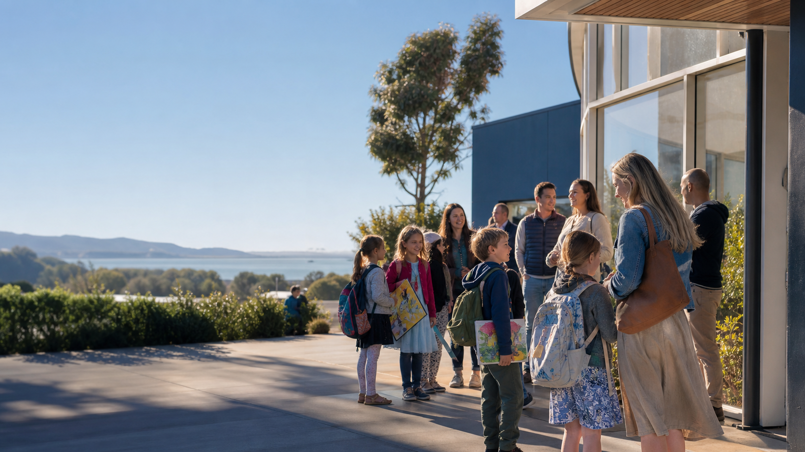
Mokyklos pranešimų archyvas
Istoriniai pranešimai iš mokyklos svetainės. Ankstesnių metų renginių datos, registracijos formos ir 2021–2022 mokslo metų sveikatos reikalavimai išsaugoti kaip archyvo medžiaga.
2026–2027 mokslo metų registracija
REGISTRACIJA
2026-2027 MOKSLO METAMS!
Atverti 2026-2027 MOKSLO METAMS! ↗
Atverti 2026-2027 MOKSLO METAMS! ↗
2026-2027 MOKSLO METAMS! – atverti šaltinio vaizdą
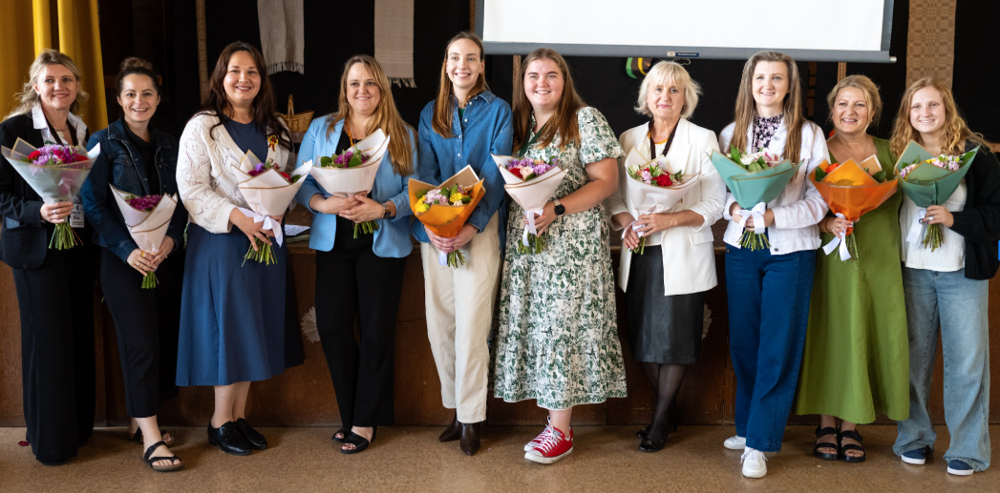
Ankstesni bendruomenės pranešimai ir renginiai
Sveikiname SF Genio MOKYTOJAS SU TARPTAUTINE MOKYTOJO DIENA!
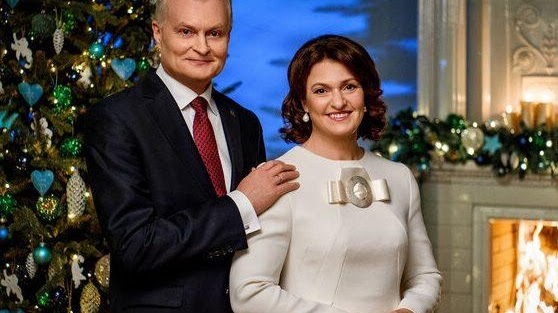
Su Tarptautine Mokytojo diena!
Sveikiname visas mūsų lituanistinės mokyklos mokytojas su ypatinga švente – Tarptautine mokytojo diena!
💛 💚 ❤️ Ačiū, kad dalijatės savo žiniomis, širdimi ir kūrybiškumu, kad ugdote mūsų vaikus ir perduodate lietuvišką žodį bei kultūrą toli nuo Tėvynės.
Linkime įkvėpimo, gražių akimirkų su mokiniais, stiprybės ir daug džiaugsmo šiame prasmingame kelyje.
Jūsų kantrybė, šiluma ir atsidavimas yra tikra dovana mūsų bendruomenei.
💛 💚 ❤️ Ačiū, kad esate mūsų bendruomenės šviesa ir ateities kūrėjos!
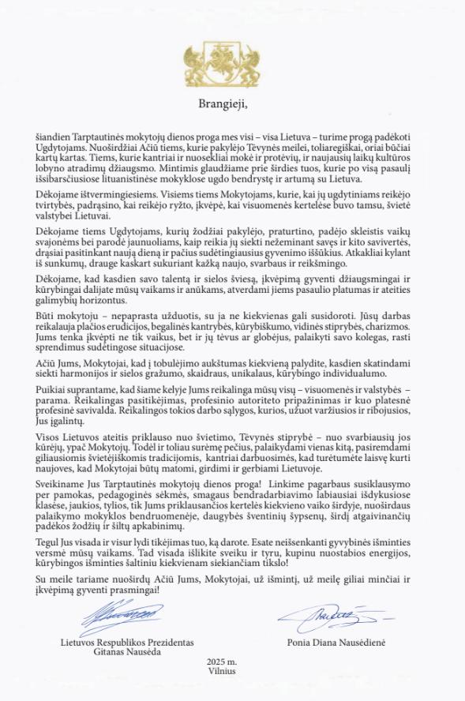
Dalinamės Lietuvos Respublikos Prezidento Gitano Nausėdos ir ponios Dianos Nausėdienės sveikinimu Tarptautinės mokytojo dienos proga!
NES MOKYKLA – TAI MOKINIAI, MOKYTOJAI IR TĖVAI!
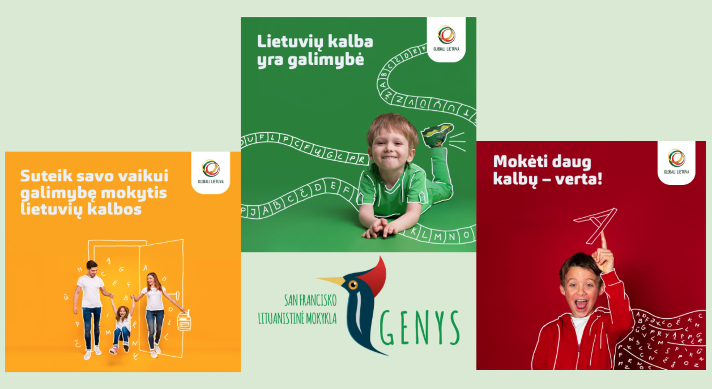
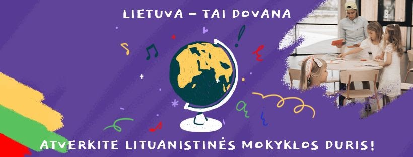
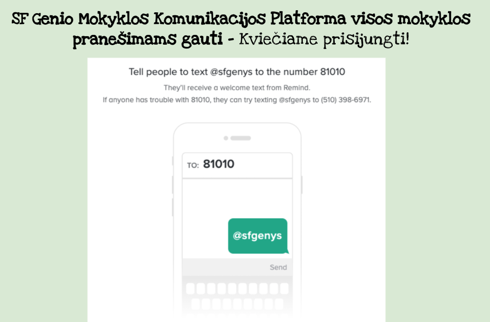
SVEIKINAME VISUS SU MOKSLO METŲ PABAIGA! 8-okŲ SKAIDRĖS!
Atverti SVEIKINAME VISUS SU MOKSLO METŲ PABAIGA! 8-okŲ SKAIDRĖS! ↗
VISOS MOKYKLOS PABAIGOS ŠVENTĖS SKAIDRĖS :)
Atverti VISOS MOKYKLOS PABAIGOS ŠVENTĖS SKAIDRĖS :) ↗

Ačiū visiems dalyvavusiems konkurse.
SF GENIO mokiniai buvo apdovanoti LT atributika
Atverti SF GENIO mokiniai buvo apdovanoti LT atributika ↗
Kviečiame pasižiūrėti ir pasidžiaugti mokinių darbais apie laisvę :)
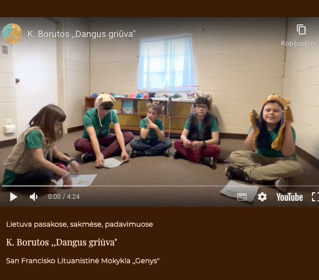
Labai džiaugiamės kaip mūsų mokiniai dalyvauja projektuose. Sveikiname mokyjos Aurelijos klasę reprezentuojant mūsų mokyklą tarptautiniame projekte: Lietuva Sakmėse ir Padavimuose su K. Borutos DANGUS GRIŪVA.
Ačiū mokytojai aurelijai ir jos mokiniams :)
MES LRT LAIDOJE ŠIRDYJE LIETUVIS
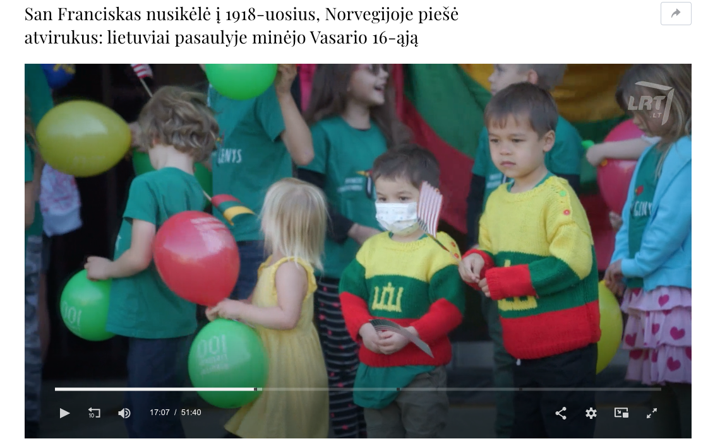
Atverti MES LRT LAIDOJE ŠIRDYJE LIETUVIS ↗
Kovo 11 Užduotėlės vaikams
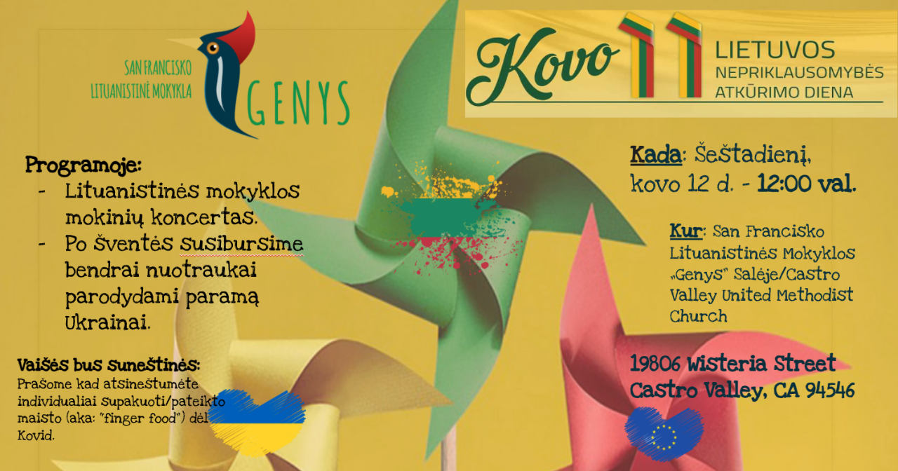
Atverti Kovo 11 Užduotėlės vaikams ↗
Atverti Kovo 11 Užduotėlės vaikams ↗
Atverti Kovo 11 Užduotėlės vaikams ↗
Atverti Kovo 11 Užduotėlės vaikams ↗
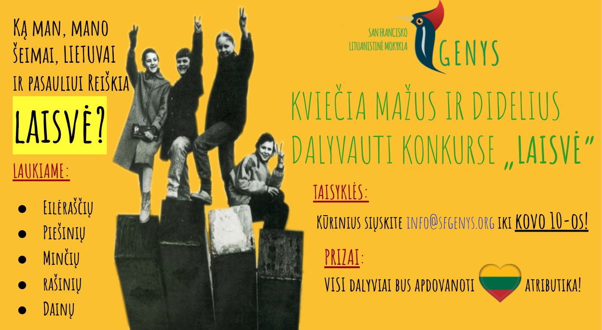
KVIEČIAME VISUS - MAŽUS IR DIDELIUS DALYVAUTI KONKURSE „LAISVĖ”
KONKURSO TEMA:
Ką man, mano šeimai, LIETUVAI ir pasauliui reiškia LAISVĖ?
TAISYKLĖS:
Kūrinius siųskite: info@sfgenys.org iki kovo 10-os!
PRIZAI:
VISI dalyviai bus apdovanoti tautiška atributika!
LAUKIAME:
- Eilėraščių
- Piešinių
- Minčių
- Rašinių
- Dainų.
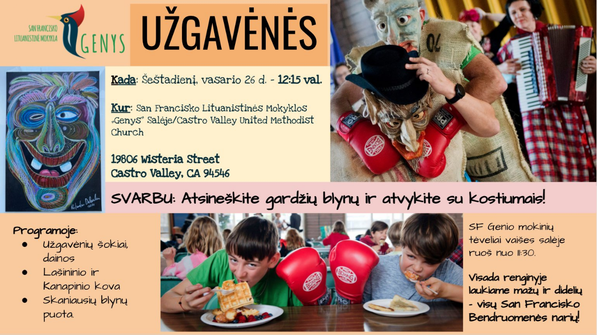
Atverti Kovo 11 Užduotėlės vaikams ↗
Atverti Kovo 11 Užduotėlės vaikams ↗
Atverti Kovo 11 Užduotėlės vaikams ↗
Užgavėnės tikrai praėjo labai smagiai! Dalinamės paruošta edukacine medžiaga.
Atverti Kovo 11 Užduotėlės vaikams ↗
Nuoširdžiai sviekiname Jus ir Jūsų šeimas - Vasario 16-oji – Valstyvės atkūrimo dienos proga. Tai yra viena didžiųjų mūsų tautos švenčių. Minėdami šią dieną mename mūsų tautos troškimą, ryžtingą siekį, pasiaukojimą – gyventi be svetimųjų priespaudos. Būkite stiprūs bei ryžtingi kasdieniuose darbuose ir siekiuose, kurdami rytdieną savo pačių šeimose, saugodami ir puoselėdami Lietuvių kalbą ir kultūrą gyvenant už Lietuvos ribų.
~ San Francisko Lituanistinė Mokykla „Genys”
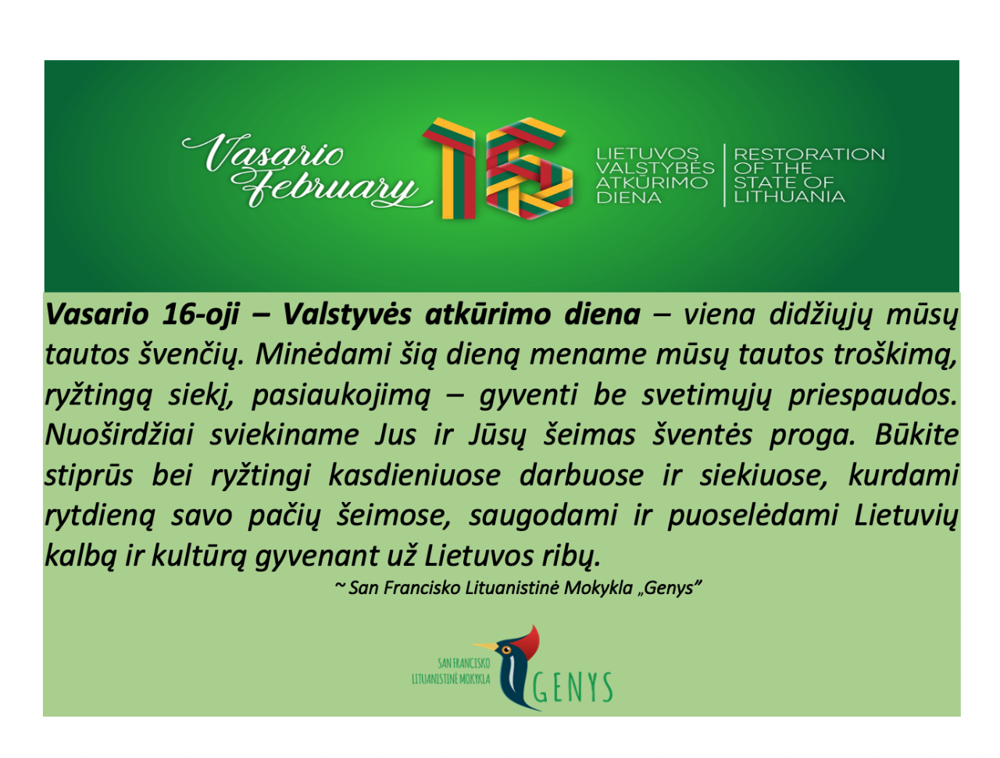
2021–2022 mokslo metų archyvas
Kalėdų šventės akimirkos
2021 Gruodis
ŠEŠTADIENIS, KAI NORISI Į MOKYKLĄ!
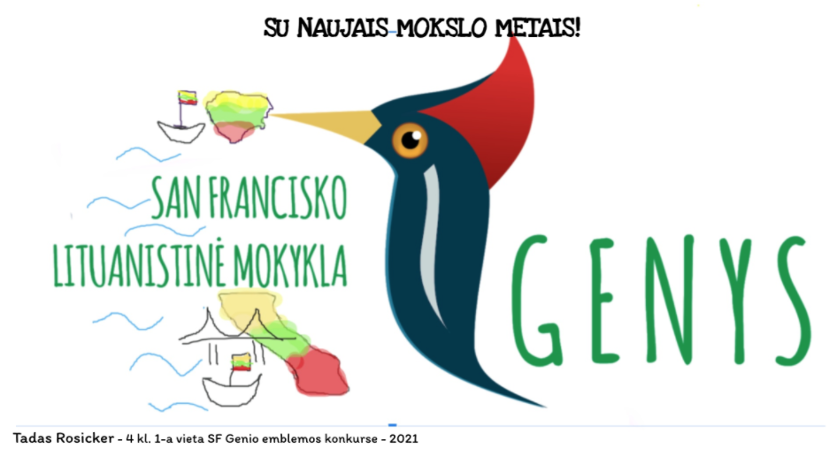
LABAS!
Pirmiausiai norime jus visus pasveikinti su artėjančiais mokslo metais!
San Francisko „Genys" mokykloje mokslus pradėsime - šeštadienį, rugsėjo 11 d.
- Pamokos vyks nuo 9:30 iki 1:30.
- Mokyklos adresas: 19806 Wisteria St, Castro Valley, CA 94546).
- 9:30 val. ryto renkamės sode prie bažnyčios ir giedame Himną! (Lauke irgi laikysimės distancijos)
Vaikams paruoškite priešpiečius/pietus ir vandens pietų pertraukai ir pasirūpinkite kad dėvėtų kaukę, visa kita mes pasirūpinsime!
TĖVŲ SUSIRINKIMAS
Kviečiame visus tėvelius dalyvauti virtualiame tėvų susirinkime: Trečiadienį, rugsėjo 8d - 19:30 - 20:30 per Zoom:
Join Zoom Meeting
Meeting ID: 977 8810 2663
Susipažinsime ir aptarsime saugaus mokymosi taisykles.
Bet dabar noriu trumpai priminti kelis reikalavimus:
- Visi dėvėsime kaukes, tiek patalpose tiek lauke.
- Dezinfekuosime patalpas prieš ir po naudojimo.
- Reguliariai valysime dažnai liečiamus paviršius.
- Patalpas vėdinsime ir kiek praktiškai galima limituosime fizinį kontaktą.
- Valgysime lauke, nesidalinsime maistu ir laikysimės fizinio atstumo.
Po susirinkimo jeigu turėsite papildomų klausimų, taip pat ateikite į Zoom (penktadienį, rugsėjo 10 - 19 val - 19:30), aš bandysiu atsakyti į likusius klausimus.
Meeting ID: 941 3596 8827
Aistė Solly
San Francisko Lituanistinės Mokyklos „Genys" Vadovė
6, 7, 8 klasės Mokytoja
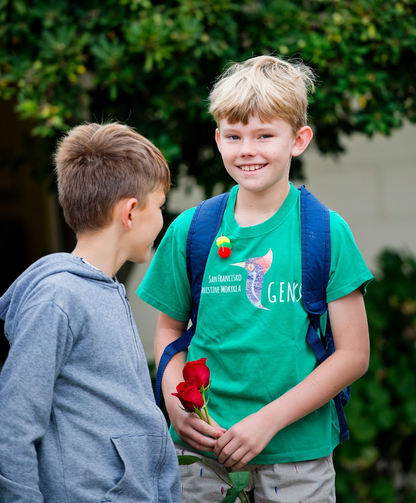
REGISTRACIJA
SAN FRANCISKO LITUANISTINĖ MOKYKLA GENYS PRADEDA MOKINIŲ REGISTRACIJĄ 2021/2022 MOKSLO METAMS
KVIEČIAME REGISTRUOTIS naujiems mokslo metams (vaikus nuo 4 iki 14 metų)!
Mokslo metai prasidės rugsėjo 11 d. ir baigsis gegužės 21 d.
2021-2022 mokslo metais mes planuojame grįžti į mokyklos patalpas (19806 Wisteria St. Castro Valley, CA 94546), bet, jeigu yra poreikis bandysime sudaryti ir distancinio mokymo klasę.
Išsamesnė informacija registracijos formoje: https://forms.gle/u5EEKScu3L5RaTZ76
SAN FRANCISKO LITUANISTINĖ MOKYKLA "GENYS" KVIEČIA REGISTRUOTIS KIŠKUČIŲ KLUBUI!
Kiškučių klubas - tai ikimokyklinio amžiaus ugdymo grupė kuri rinksis užsiėmimams SF Genio mokyklos patalpose kas antrą šeštadienį (19806 Wisteria St. Castro Valley, CA 94546). Teveliai užsiėmimuose turės pasilikti.
Mokslo metai prasidės rugsėjo 11 d. ir baigsis gegužės 21 d.
Registracijos informaciją rasite čia: https://forms.gle/AgDZ9KhvVXzj5Z2u9
SU NEKANTRUMU LAUKIAME NAUJŲ ŠEIMŲ IR NAUJOS ENERGIJOS!
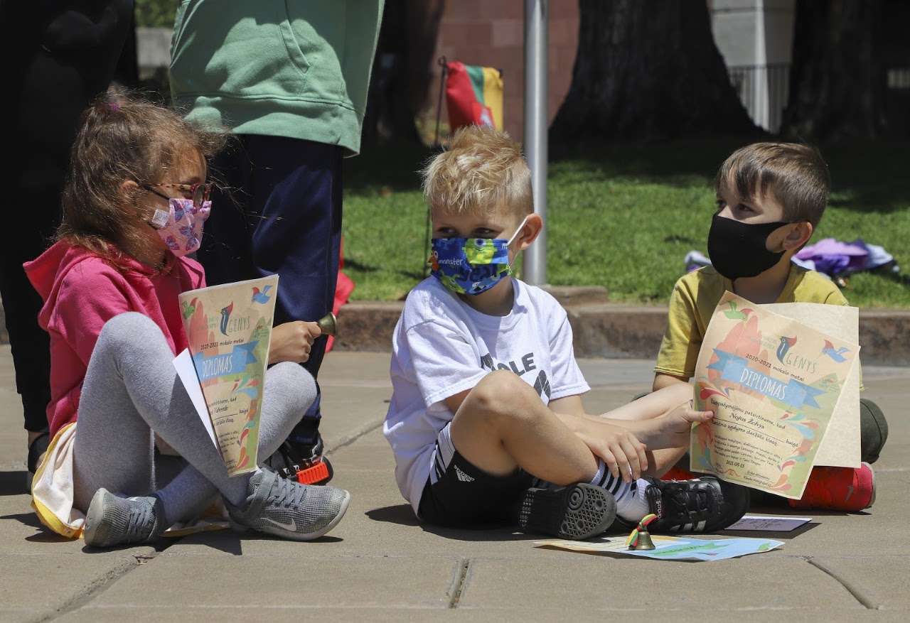
SUSIPAžINKIME!

Šeštadieninė lituanistinė mokykla „Genys”, burianti San Francisko lietuvius, buvo įkurta 2006 metais. Viskas prasidėjo, kai keturios mamos entuziastės nusprendė, kad būtų šaunu surasti lietuvę mokytoją, kuri norėtų leisti laiką su vaikais šeštadieniais ir padėti jiems kalbėti lietuvių kalba.
Mūsų tikslas – sukurti lietuvių išeivių vaikams aplinką, kurioje jie galėtų daugiau sužinoti apie Lietuvą, mokytis kalbos, gilintis į papročius bei istoriją ir susirasti lietuviškai kalbančių draugų.
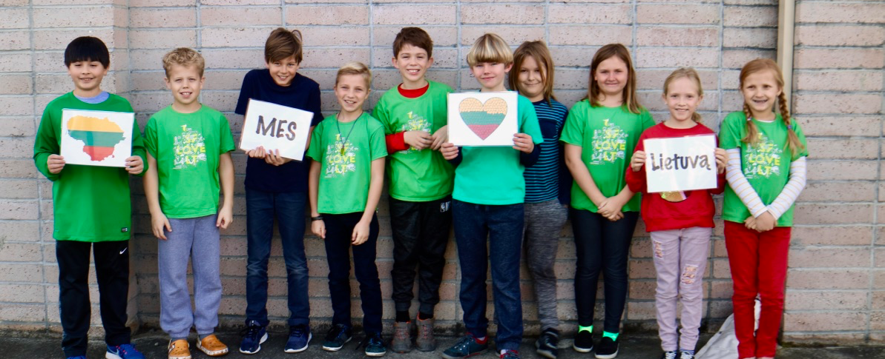

Kiekvienais metais mūsų mokykla auga ir plečiasi. Mokiniai dalyvauja dainų ir šokių šventėse, spektakliuose, televizijos laidose, įvairiuose projektuose, tarptautiniuose rašinių, piešinių, atvirukų, ir animacijų konkursuose. Covid-19 pandemijos metu tęsiame mokslus nuotoliniu būdu.
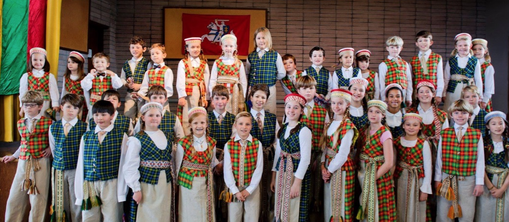
PERŽIŪRĖTI VISAS NAUJIENAS >>
REGISTRACIJA 2022-2023 MOKSLO METAMS JAU PRASIDĖJO!
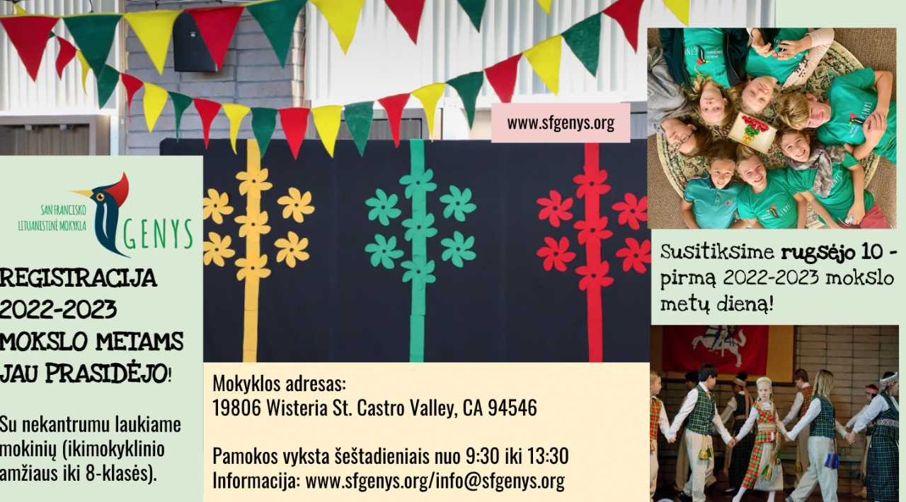
Su nekantrumu laukiame mokinių (ikimokyklinio amžiaus iki 8-klasės).
- REGISTRACIJOS FORMA (K-8kl mokiniams): https://forms.gle/fmx4ZeE9QH1SbUXP6 (Darželio iki 8 klasės mokiniams)
- REGISTRACIJOS FORMA (ikimokyklinukams Zuikučiams - iki 4 metų): https://forms.gle/3ZMauhxffeWMmHgi8
Mokslus pradėsime RUGSĖJO 10d. ir baigsime GEGUŽĖS 20d.
Mokyklos adresas:
19806 Wisteria St. Castro Valley, CA 94546
Pamokos vyksta šeštadieniais nuo 9:30 iki 13:30
Informacija: www.sfgenys.org/info@sfgenys.org
Mes MYLIM LIETUVĄ ir Lietuvių kalbą
SF Genio Komanda